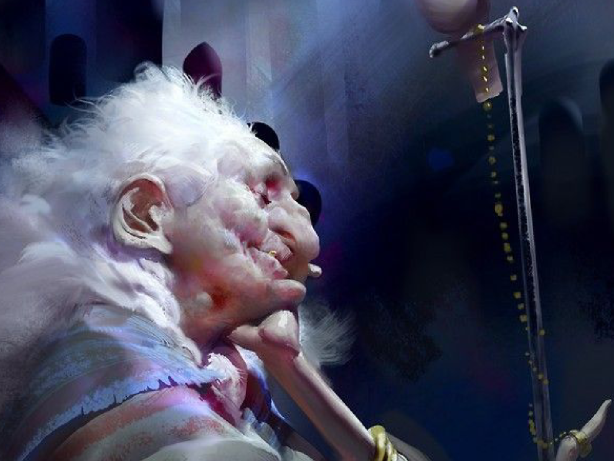

Lembrados

Os Lembrados são indivíduos que, ao longo da história, por um capricho do destino ou por forças
desconhecidas, foram escolhidos para carregar um fardo incomum: viver suas vidas sob uma condição dolorosa.
Não há padrão para sua seleção, ela parece aleatória, injusta, como se o universo tivesse jogado dados e
apontado seus nomes.
Essas pessoas afirmam que, em algum momento de suas vidas, perceberam que tudo o que conheciam havia mudado.
O mundo, tal como é hoje, não era o mesmo que antes. Para eles, é como se a realidade tivesse sido
reiniciada, como se uma nova versão do universo tivesse substituído a anterior. Eles se lembram de eventos,
lugares e conhecimentos que não existem mais, como se tivessem vivido em outra linha do tempo, em outra
dimensão.
Com o passar dos dias, seus corpos começam a sofrer transformações sutis, mas profundas. A pele se torna
mais espessa, marcada por rugas e sinais de envelhecimento precoce, mas paradoxalmente adquire uma
resistência extraordinária. Fisicamente, tornam-se mais fortes, mais resistentes à dor e ao cansaço.
Intelectualmente, demonstram uma capacidade de raciocínio e compreensão acima da média, como se tivessem
acesso a conhecimentos esquecidos ou proibidos.
Apesar dessas melhorias, os Lembrados carregam uma sentença inevitável: sua vida será breve. Estão
condenados a morrer em pouco tempo, como se sua existência fosse apenas uma etapa transitória, um sacrifício
necessário para o equilíbrio do mundo.
Com o tempo, surgiram crenças e religiões em torno desses indivíduos. Algumas doutrinas os veneram como
mártires, acreditando que sua morte é essencial para manter o funcionamento da realidade. Outras os veem
como erros cômicos, falhas na estrutura do universo. Em certos cultos, os Lembrados são oferecidos como
sacrifício, numa tentativa de preservar a ordem e evitar o colapso do mundo.
Alguns deles, em sua lucidez dolorosa, reconhecem sua condição com resignação. Muitos reproduzem o que o
primeiro indivíduo reconhecido como lembrado, Tales de Mileto, disse:
"Nossa existência gera desconforto a este mundo, somos erros."
Mecânicamente falando, são velhos resistentes, podem ser Humanos, Aberrados, Anômalos, Corpos Fantoches etc.
Lembrados
- Resistência+8
- Força+6
- Conhecimento+6
- Agilidade−6
- Mental−3
- Sorte−2